Est. 1981 — Ongoing
The
Deconstruction
Archive
A curated record of garments that questioned the body, the seam, and the idea of clothing itself. Five designers. One philosophy. No resolution.
Scroll to descend
Rick Owens
Los Angeles / Paris — est. 1994
FW2023 Luxor — runway, Paris
"I make clothes for people who are not afraid of other people."
Philosophy
The silhouette as monument. Draping as protest. Volume as the only honest response to the human form. Owens builds garments the way architects build ruins — with intention toward eternity.
Construction
Boiled wool. Object-dyed leather. Asymmetric hem lines. Hand-finished seams that expose the process. The lining as garment. The closure as ornament.
Collections Referenced
FW2014 Faun — SS2015 Sphinx — FW2023 Luxor
SS2011 Palace — FW2006 Release — SS2024
Porterville
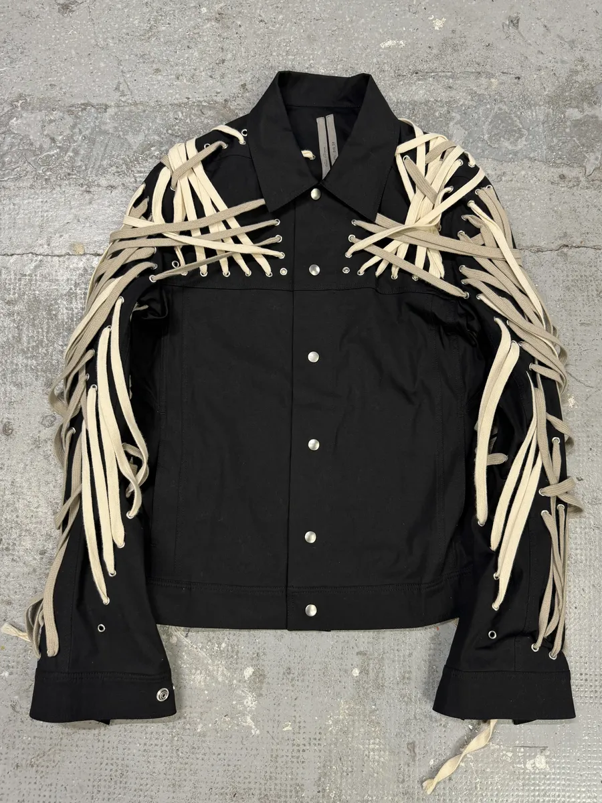
Megalaced Trucker Jacket
SS2020

Bolan Patchwork Flare Jeans
Ongoing
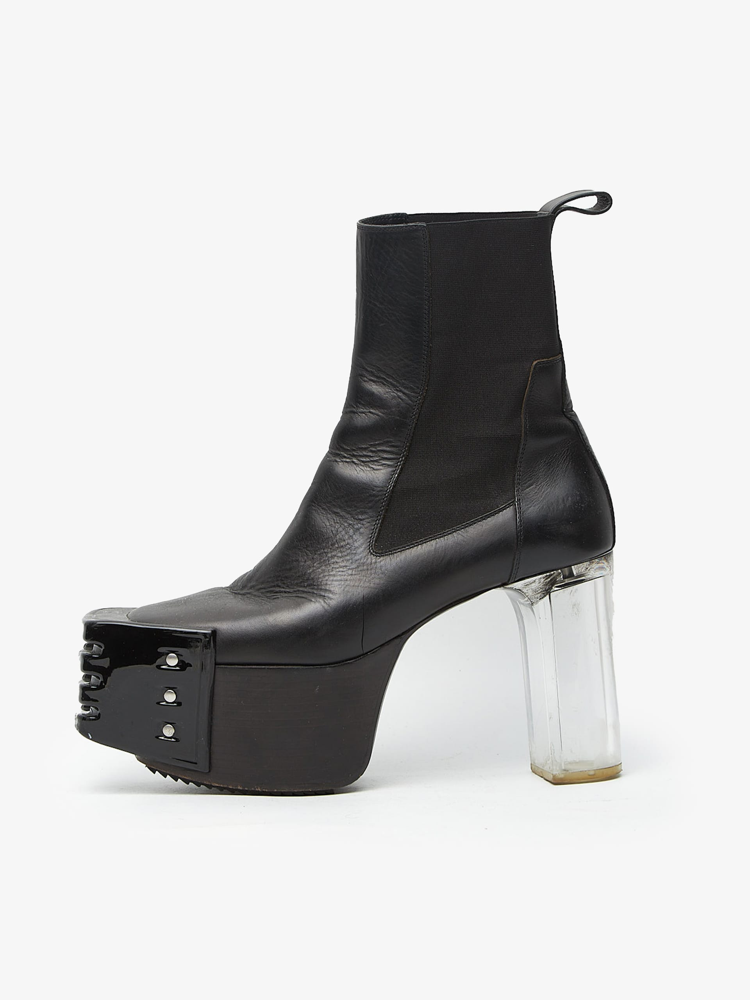
Kiss Heels
Ongoing
Carol Christian Poell
Milan — est. 1993
Process is the only truth the garment knows.
Philosophy
The seam as scar. The stitch as record of time spent. Poell builds garments that remember their own construction — each layer of hand-stitching a document of the hours invested.
Construction
Running stitch by hand. Drip-rubber sole application. Horse intestine lining. Vegetable-tanned continuous leathers. No sample made — every piece is a prototype and a final.
Collections Referenced
AW2003 Continuous Jacket — SS2000 Drip Coat
AW2006 Suspended Sole — SS2004
Object-dyed Series
AW2003 — studio, Milan
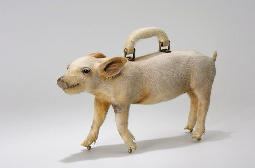
Pig Bag
Object Series
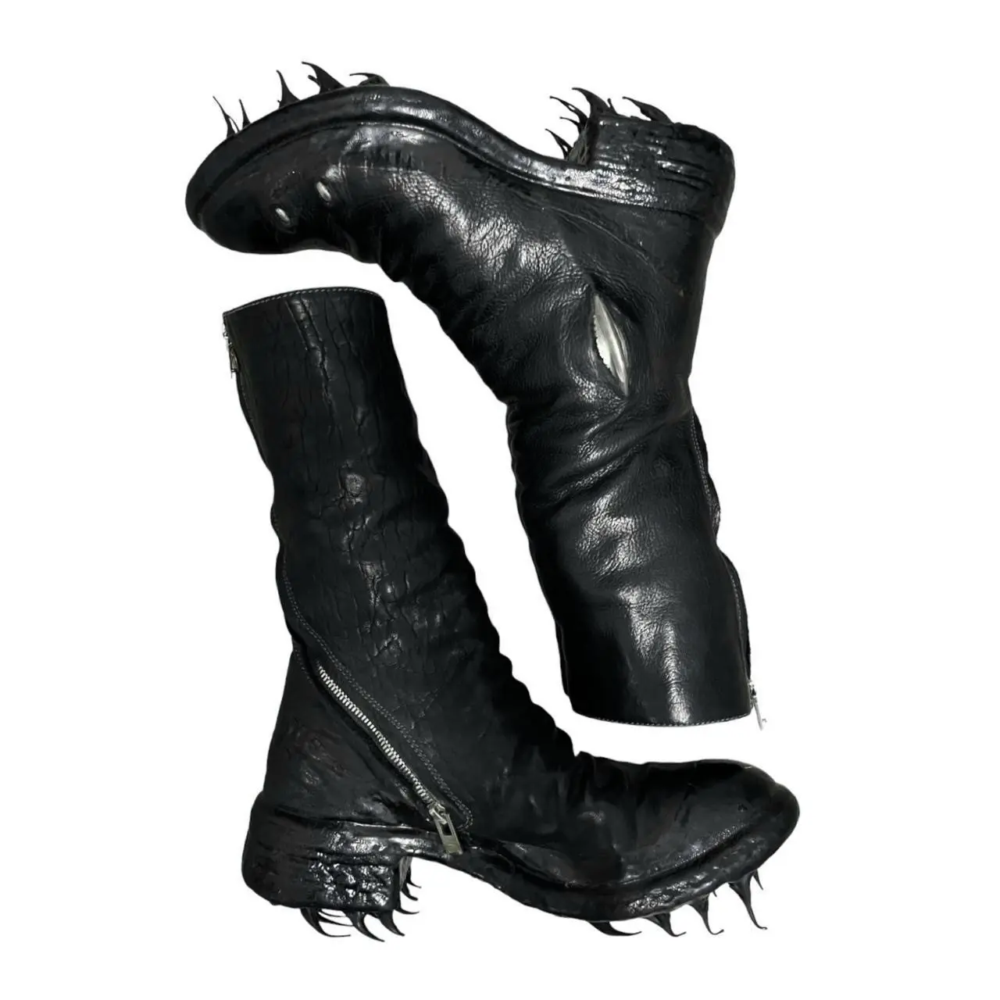
Prosthetic Drip Boots
AW2006
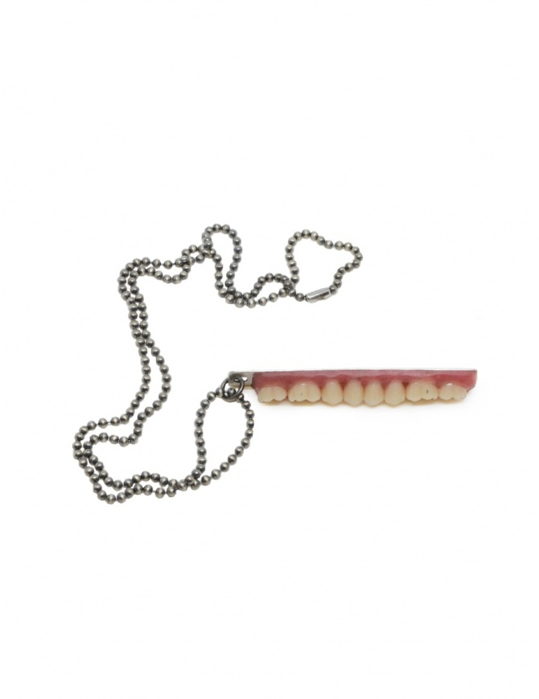
Teeth Necklace
Ongoing
Maison Margiela
Paris — est. 1988
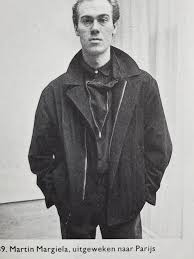
SS1989 — presentation, Paris
The white label is the refusal of the signature.
Philosophy
Anonymity as authorship. The stockman as garment. The lining as exterior. Margiela systematically dismantled the conventions of fashion to reveal what fashion had always concealed: its own construction.
Construction
Replica of found objects. Artisanal reconstruction. Tabi boot as split-toe architecture. Stockman jacket with exposed inner padding. The seam turned outward. The concept made literal.
Collections Referenced
Line 0 Artisanal — Line 1 (womenswear) — Line 14
SS1989 — AW1992 Replica — AW2008
Les Vêtements
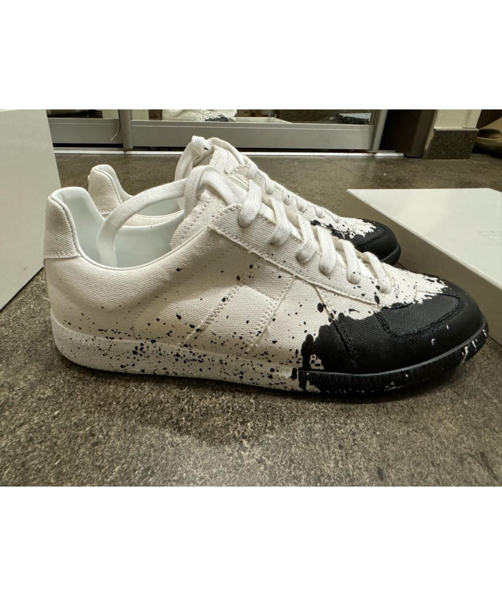
Painted GATs
Artisanal
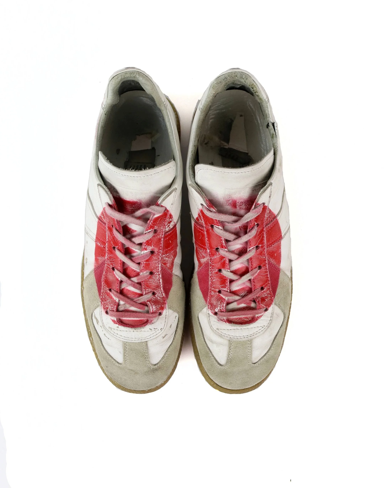
Japan GATs
Line 22
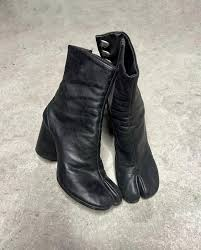
Tabi Boot
Ongoing
Yohji Yamamoto
Tokyo / Paris — est. 1972
"Perfection is ugly. I want to see scars, failure, disorder, distortion."
Philosophy
Black as the only honest response to color. Asymmetry as the truest geometry. The unfinished hem as deliberate statement. Yamamoto refuses resolution — his garments exist in permanent tension.
Construction
Asymmetric pattern cutting. Draped without fixing. Hanging seams. Deliberate imprecision. The garment as shadow — present but refusing definition.
Collections Referenced
SS1981 Hiroshima Chic — AW1983 — SS2003
Y's Series — Pour Homme — SS2011 — AW2022
AW1983 — runway, Paris
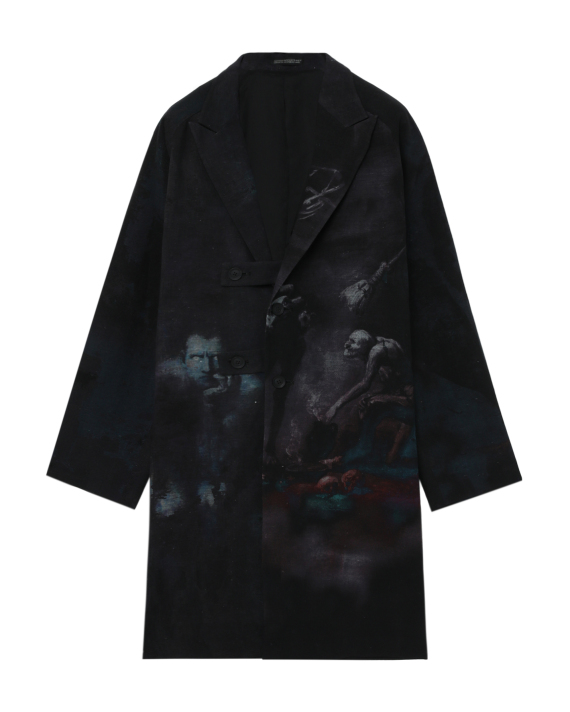
Attach Print Coat
Pour Homme
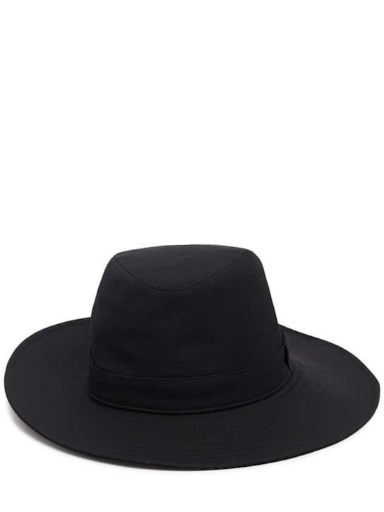
Wool Brim Hat
Pour Homme
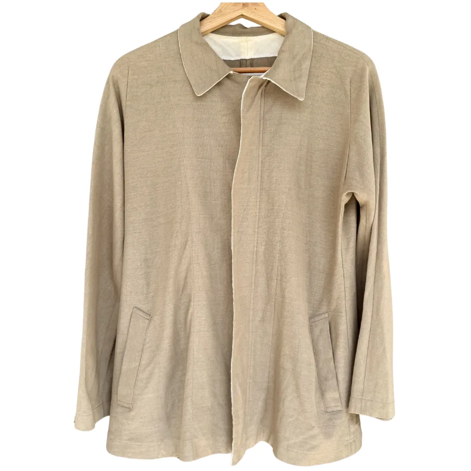
Side Zip-up Jacket
Y's Series
Guidi
Florence — est. 1988
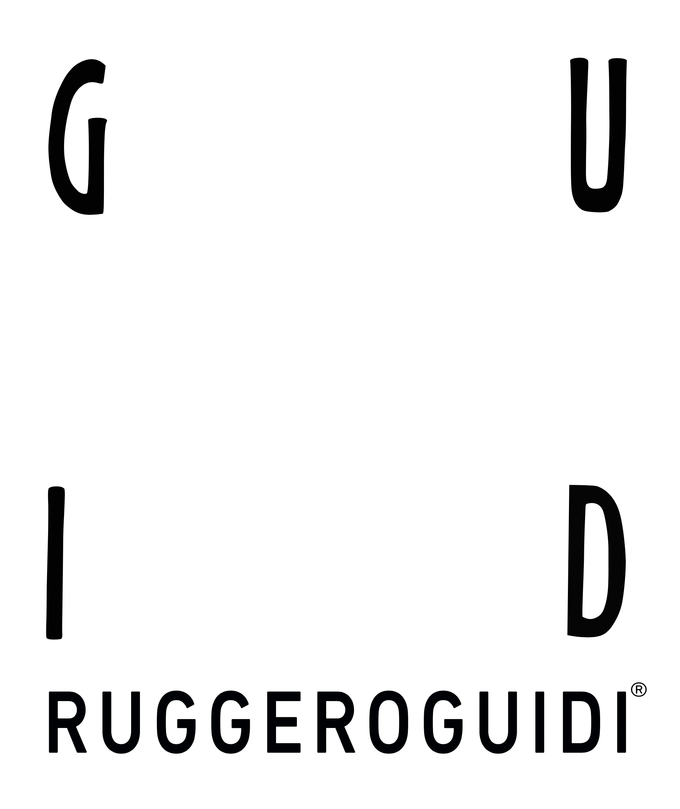
FW2015 — look 12 — Florence atelier
The leather lives. It remembers every touch.
Philosophy
Object-dyeing on living hide. The gradient as autobiography. Time visible in the surface of the material. Guidi makes garments that age with their wearer — each piece a collaboration between maker and time.
Construction
Horse leather on living horse. Vegetable-tanned hide. Hand-painted fire gradient. Single-welt construction. The sole as statement of permanence against a disposable world.
Collections Referenced
FW2010 — SS2013 — FW2018 — FW2022
Object-Dyed Leather Series — Horse Hide Boots
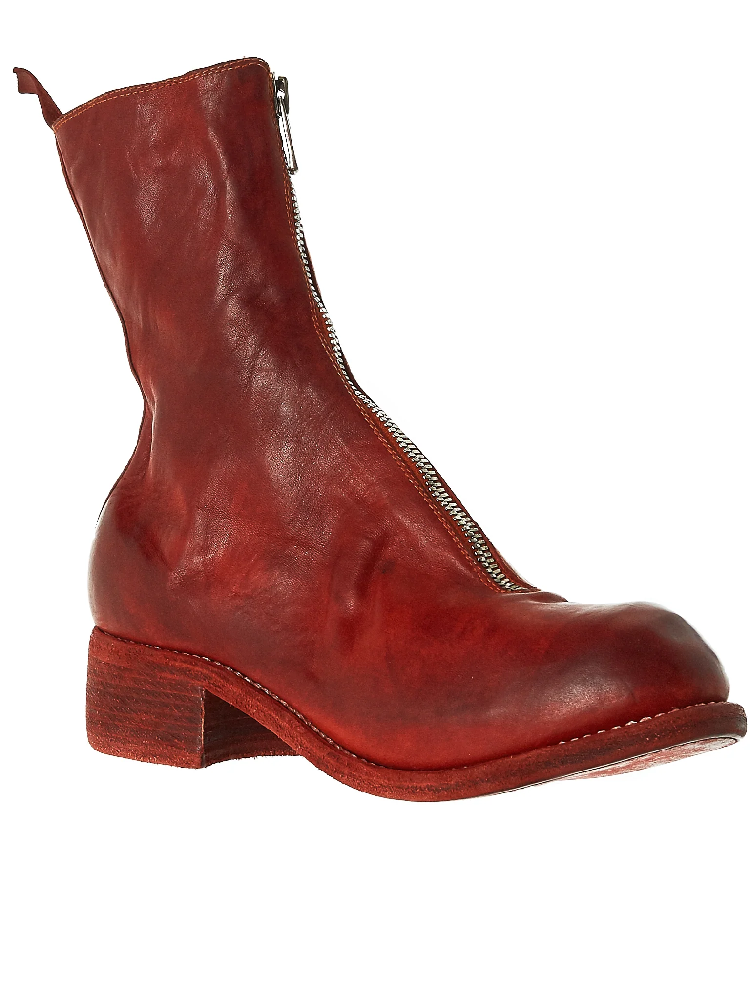
Leather Boot
Horse Hide
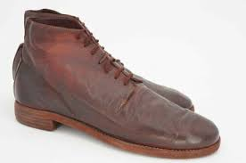
Classy Leather Heel
Ongoing
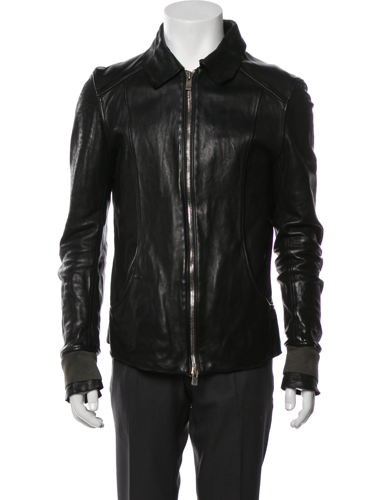
Leather Jacket
Object-Dyed
The form is consumed.
Only the archive remains.